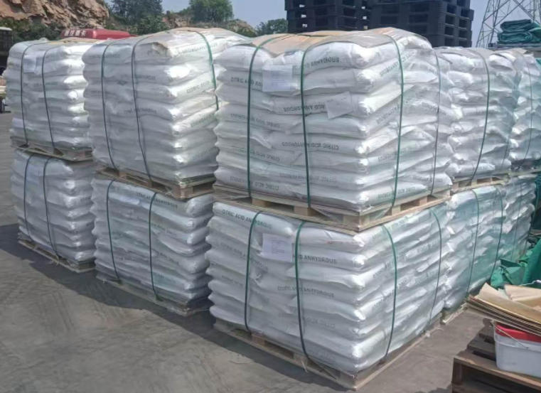

Пример применения 04 Кормовые добавки и питание животных
MCP как источник фосфора в кормах для птицы
Как производители кормов могут оценить монокальцийфосфат в рамках сбалансированной программы фосфора и кальция для бройлеров, несушек и племенной птицы.

Краткий ответ
Почему MCP добавляют в корм для птицы?
Кормовой монокальцийфосфат используется для получения дополнительного фосфора и кальция, когда основные ингредиенты не соответствуют потребностям птицы. Его оценивают по спецификации питательных веществ, валидированным значениям доступности или усваиваемости, пределам безопасности и физическим свойствам и обращению. Уровень внесения зависит от вида, возраста, целей производства, других ингредиентов, программы фитазы и местных требований к кормам.
01 · Задача применения
Баланс фосфора в рационе
Комбикормовый завод должен удовлетворять потребности птицы в фосфоре и кальции без избыточного внесения минералов и без использования необоснованного значения матрицы. Таким образом, MCP следует оценивать как один из компонентов полного рациона, а не как самостоятельную гарантию продуктивности.
Примечание по питанию: Потребности и запасы безопасности варьируются в зависимости от генетики, возраста, целевой продуктивности и юрисдикции. Квалифицированный специалист по питанию животных должен одобрить окончательную рецептуру.
02 · Роль в питании
Что MCP вносит в рацион птицы
Источник фосфора
При правильном балансе в рационе обеспечивает дополнительный фосфор для развития, обмена веществ и формирования скелета.
Вклад кальция
Вносит кальций, который должен быть включен в общий баланс кальция и фосфора в рационе.
Сравнение по питательному составу
Определённая спецификация питательных веществ позволяет специалисту по питанию животных сравнивать источники фосфатов по фактическому содержанию питательных веществ.
Пригодность для производства кормов
Размер частиц, сыпучесть, влажность и характеристики смешивания влияют на точность дозирования, однородность премикса и обработку.
Взаимодействия для включения в модель
- Естественный фосфор и кальций из всех сырьевых материалов
- Вклад матрицы фитазы и условия обработки корма
- Возраст птицы, потребление корма и целевая продуктивность
- Совместимость электролитов, минералов и премиксов
03 · План оценки
Переход от спецификации к одобрению кормовых заводов
Одобрить матрицу питательных веществ
Определите общий и доступный или усваиваемый фосфор, кальций и любые согласованные значения рецептуры с указанием подтверждающих методов.
Квалифицировать продукт
Проверьте стабильность партий, фтор, нежелательные элементы, влажность, размер частиц и необходимые нормативные документы.
Проверка производства
Проверьте прием, хранение, точность дозирования, однородность смешивания, поведение гранулирования и анализ готового корма.
Мониторинг показателей поголовья
Используйте программу питания компании для мониторинга потребления корма, роста или продуктивности, показателей состояния скелета и состояния подстилки.
| Область | Показатели | Назначение |
|---|---|---|
| Питательная ценность | Фосфор, кальций и матрица | Точная рецептура с минимальными затратами |
| Безопасность кормления | Фтор и нежелательные элементы | Регулирование и контроль безопасности животных |
| Физические свойства | Размер частиц, влажность и сыпучесть | Надёжное дозирование и смешивание |
| Готовый корм | Однородность и аналитическая проверка | Подтверждает результат производственного внедрения |
04 · Качество и организация поставок
Укажите требования к кормовому MCP до сравнения цен
05 · Часто задаваемые вопросы
MCP в рационе птицы
Почему MCP используется в кормах для птицы?
Он обеспечивает дополнительный фосфор и кальций, используемые для формирования сбалансированного рациона, когда основные ингредиенты не соответствуют требованиям.
Является ли общий фосфор таким же, как доступный фосфор?
Нет. Химическое содержание и биологическая доступность — это разные понятия; используйте значения матрицы, соответствующие системе составления рационов.
Как фитаза влияет на включение MCP?
Фитаза может выделять фосфор, связанный с фитатами, из растительных ингредиентов. Учитывайте подтверждённый вклад фитазы в питательную матрицу при балансировке дополнительного фосфата.
Какие параметры качества MCP имеют значение?
Изучите фосфор, кальций, фтор, влагу, размер частиц, нежелательные элементы, идентичность, методы и соответствие местным требованиям к кормам.
Какая информация нужна для коммерческого предложения?
Предоставьте требуемый кормовой стандарт, спецификацию, объём, размер частиц, упаковку, место назначения, документы и график доставки.
Технический и коммерческий запрос
Обсудите MCP для вашей кормовой программы.
Включайте ограничения по питательным веществам и безопасности, размер частиц, объём, упаковку, место назначения и необходимые сертификаты.